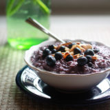

Back
Blueberries and Cream Oatmeal
Ingredients
- 1 cup oatmeal
- 1 1/2 cups water
- 1 cup milk + a few extra tablespoons for serving
- 2 tablespoons chia seeds (optional)
- 2 tablespoons pure maple syrup
- 1 cup + 1/4 cup fresh blueberries (about 5 ounces total)
- Pinch salt
- 2 teaspoons vanilla extract

Instructions
- Add oats, water, milk, chia seeds, maple syrup, and 1 cup blueberries to a medium saucepan over medium heat. Stir to combine. Cook, stirring occasionally, until the mixture comes to a boil, about 5 minutes. Reduce heat and simmer until the oats have thickened and most of the berries have burst, turning the oatmeal purple, about 5 more minutes. Remove from heat and stir in the vanilla extract.
- Scoop into bowls and divide remaining berries between the two. Drizzle with milk. Add optional toppings if desired. Serve.
Source